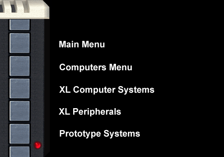

|
The Atari 1200XL Keyboard Fix
By Bob Woolley (June 3, 2002)
After a while, the keys on your 1200XL will start to
"miss" and turn "cranky", usually in groups. This is due to a poor
connection from the mylar to the printed circuit board inside your keyboard.
The only solution is to take the board apart and fix it. This will be mostly
a visual explanation given in a series of photographs.

Figure 1. |
Figure 1 is a shot of the required tools and chemicals. This shows a
properly sized screwdriver, some Q-Tips, a can of Goof-Off, and the
conductive paint in a pen applicator. The tough item is the paint. It is a
silver bearing liquid that needs to be applied carefully to specific
surfaces. Using a brush is OK as long as it works. You will see that it need
not be so beautiful as long as it stays in its own yard. The Goof-Off is a
powerful solvent that worked well for me but is probably not the only
solution. Just be very careful not to dissolve the carbon plating on the
mylar! The screwdriver is from Sears; the Q-Tips were stolen from work.....
:)

Figure 2. |
So, pull the cover off of your 1200XL and flip it over. See all the little
screws on the bottom of the keyboard? Take them all out. There is one screw
almost buried under the flat cable - don't forget it. When all the screws
are out, the brown circuit board will come free from the key mechanism. Turn
the board over and you will see the mylar key matrix (Figure 2.) You need to
very carefully pull the mylar, along with the silicone rubber gasket, away
from the circuit board. The silicone gasket will tend to stick severely
where it was compressed by the mounting screws - take it easy! Try pulling
from a different direction if it is really stuck. A firm, steady pressure
will normally work. If you do rip the silicone, just place it back in its
proper position on the mylar. The silicone will not deform permanently so
re-positioning it will work just fine. The edge fingers that connect to the
circuit board have an interleave tape on them so expect that adhesive to
stick somewhere.
When finished, turn over the mylar and you'll see Figure 3, the bottom of
the mylar and the surface of the circuit board. The mylar has a carbon trace
contact array that matches the gold contact surfaces on the board. These two
work just fine together. The edge connector also has carbon surfaces that
meet the gold contacts on the board, but these do not work well at all. I
have tried just adding pressure to these contacts, which works for a while,
but the only good fix is to add a better contact material, in this case,
silver paint. To do this, we need to first remove the interleave tape - just
pull it off and throw it away. Then we need to clean off the glue left from
the tape (on both the board and mylar). The board is no problem at all -
just spread Goof-Off on it, count to $14 in hex, and wipe off all the glue
with a rag. It comes right off. Nothing else comes off with it. The mylar is
not so easy. Goof-Off will eat off the carbon if you get too aggressive
here, so be careful. Wet the glue with Goof-Off. Count to $A. Carefully wipe
the glue off gently with a Q-Tip. Do not scrape off the carbon fingers. Once
clean, it is time to paint or draw new contact fingers on the mylar. This is
not easy, so don't expect perfection here.

Figure 4. |
Look at Figure 4. This is all the better this step needs to be. Be sure not
to short between two fingers. If you make a mistake, clean off all the paint
with Goof-Off. Don't try to clean off ALL the paint, just enough to fix the
problem. See the little blob of paint at the bottom of each finger? I do
these by drawing top down, in one smooth stroke. Where I stop, a little blob
of paint is left. It does not look so even, but this will work just fine.
You don't have to cover the whole contact from side to side, just top to
bottom. Make sure there are no shorts between the contacts!! Let it dry.
Wipe off the gold contacts on the circuit board (and the rest of the board -
NOT the mylar) with alcohol. Now, you put it all back together. Align the
mylar on the circuit board. Place it back on the key assembly (there are two
alignment pins). Screw it down carefully. A tip: when you start a screw in
plastic, back it up first - until it drops into the start of the threads (it
usually makes a little "click" noise). Then turn it in. This keeps you from
making new threads in the plastic. Put your 1200XL back together and run the
keyboard test in the OS. All the keys should make contact with just the
lightest touch.
Good Job!!
html-ized by Dan Vernon -- June 2002
|
|
|